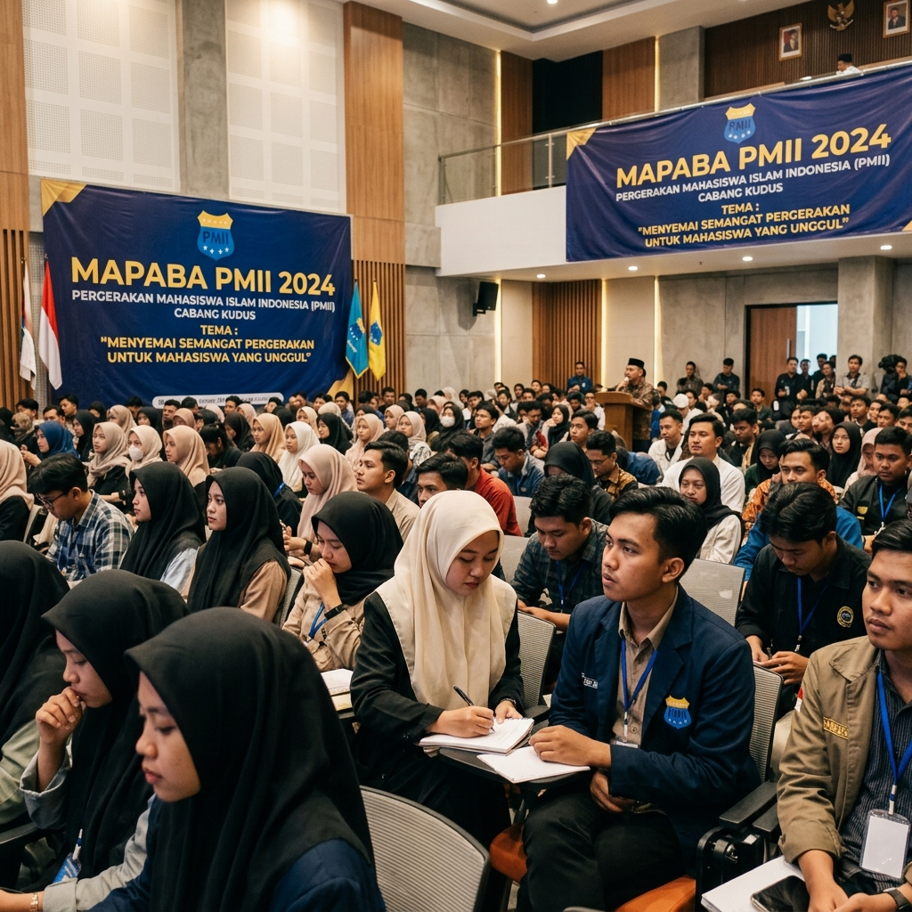
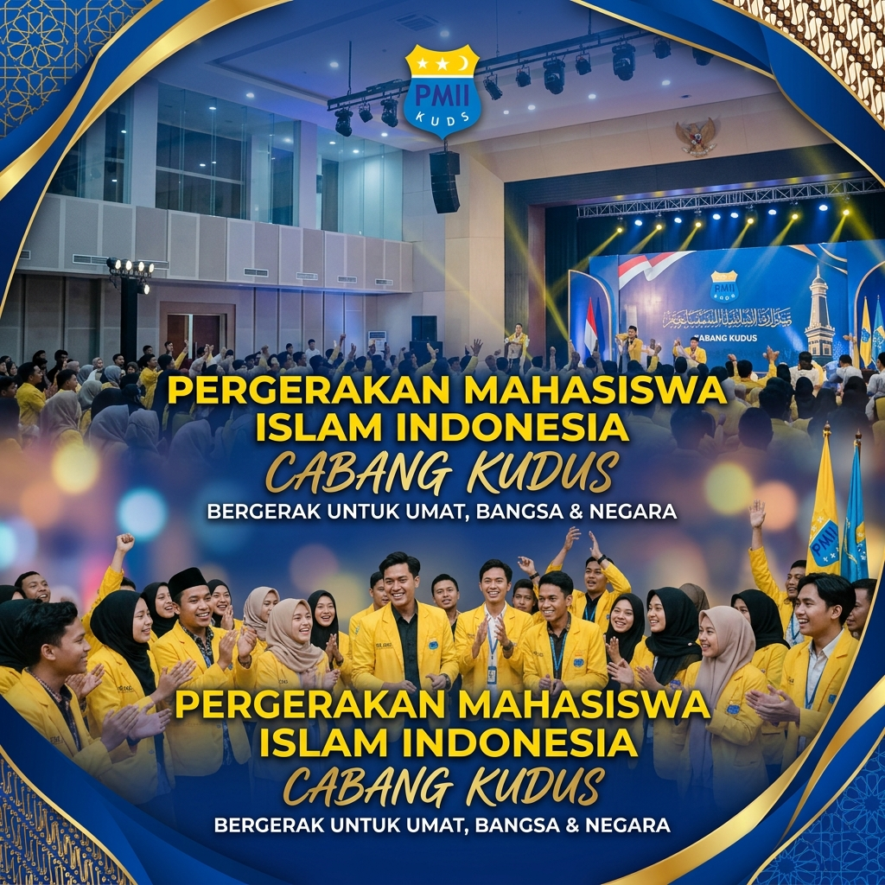
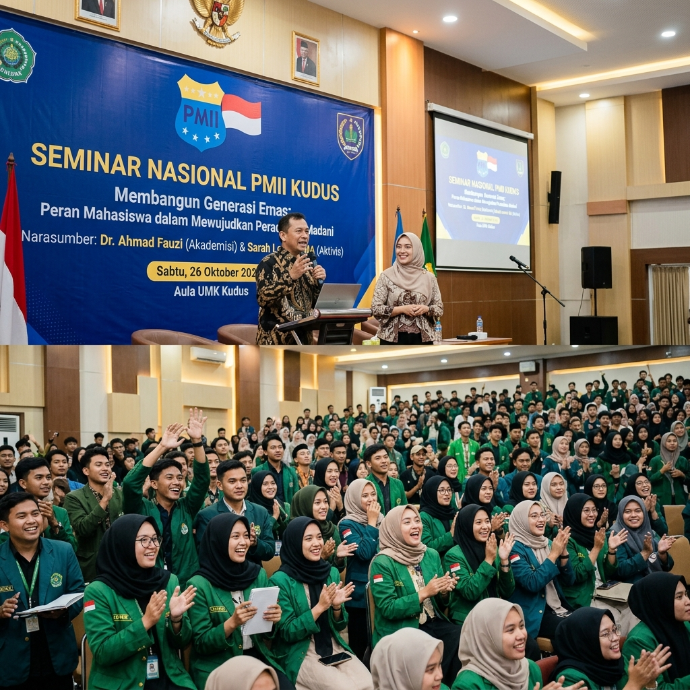
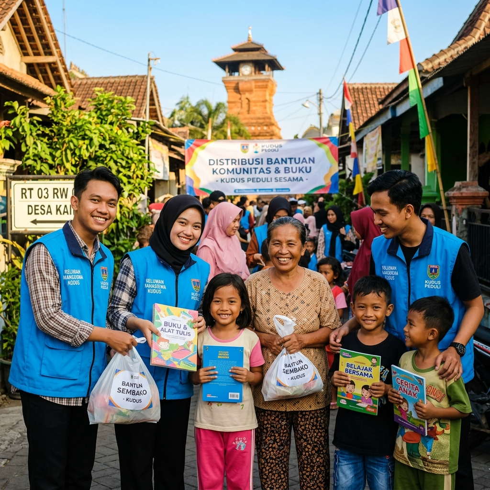
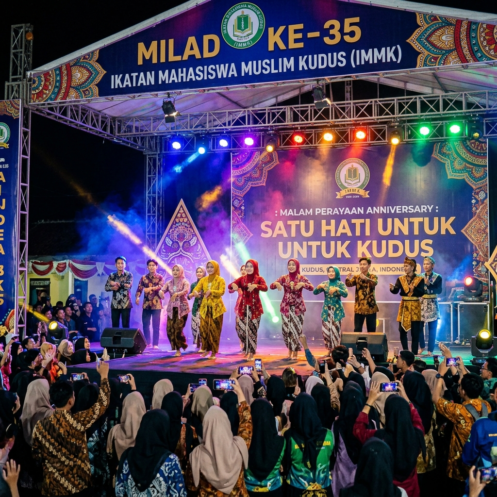

Pengurus Cabang Pergerakan Mahasiswa Islam Indonesia (PC PMII) Kudus hadir sebagai wadah pembinaan, perjuangan intelektual, dan pengabdian masyarakat bagi mahasiswa se-Kabupaten Kudus.
Pelatihan kepemimpinan bertahap mulai dari MAPABA, PKD, hingga PKL.
Mengawal isu publik dan pengabdian nyata bagi masyarakat Kudus.
Penguatan pemikiran Aswaja An-Nahdliyah, kebangsaan, dan filsafat.
Pengembangan bakat seni, budaya lokal Kudus, jurnalistik, dan olahraga.

Pergerakan Mahasiswa Islam Indonesia (PMII) Cabang Kudus didirikan sebagai sarana perjuangan mahasiswa Islam dalam menegakkan ajaran Islam Ahlussunnah wal Jama'ah An-Nahdliyah serta mempertahankan keutuhan NKRI.
Berdiri di atas landasan Nilai Dasar Pergerakan (NDP), PMII Kudus konsisten mencetak kader yang unggul secara intelektual, memiliki integritas moral yang luhur, dan aktif berkontribusi dalam pembangunan daerah Kudus.
Pondasi ketauhidan dan ketakwaan dalam setiap langkah pergerakan.
Kemanusiaan, solidaritas sosial, dan toleransi antar sesama.
Kepedulian terhadap kelestarian lingkungan dan alam sekitar.
Prinsip Tawasuth, Tawazun, I'tidal, dan Tasamuh dalam beragama.
Tiga pilar utama yang menjadi penuntun seluruh langkah pergerakan kader PMII Kudus.
Zikir (Dzikir kepada Allah SWT), Fikir (Kajian kritis & intelektual), dan Amal Sholeh (Aksi nyata pengabdian untuk masyarakat).
Khittah Perjuangan kemahasiswaan, Khittah Pengabdian Kemanusiaan, dan Khittah Intelektualisme Islam yang berwawasan kebangsaan.
Komitmen Keislaman yang moderat, Komitmen Keindonesiaan yang ber-Pancasila, dan Komitmen Keummatan demi keadilan sosial.
Ikuti berbagai agenda pelatihan, seminar publik, kajian rutin, dan pengabdian masyarakat.

Akan DatangGerbang awal pengenalan organisasi PMII untuk mahasiswa baru se-Kabupaten Kudus. Pembekalan materi ke-Islam-an, ke-Indonesia-an, dan ke-PMII-an.

TerlaksanaKajian kritis interaktif bersama akademisi dan tokoh kepemudaan Kudus dalam merumuskan strategi pemberdayaan ekonomi dan UMKM daerah.

TerlaksanaAksi nyata pengabdian masyarakat di lereng Gunung Muria berupa penyerahan sembako, periksa kesehatan gratis, dan pojok baca anak.
Potret kebersamaan, semangat pergerakan, dan momen bersejarah kader PC PMII Kudus.

PC PMII Kudus membawahi berbagai basis komisariat perguruan tinggi dan rayon fakultas.
Universitas Muria Kudus
Institut Agama Islam Negeri Kudus
Universitas Muhammadiyah Kudus
STIBI Raden Umar Said Kudus
Korps PMII Putri Cabang Kudus
Ikatan Keluarga Alumni PMII
Ingin bergabung menjadi kader, berkolaborasi dalam kegiatan, atau mengajukan pertanyaan seputar PMII Kudus? Silakan hubungi kami.
Isi formulir di bawah ini dan tim sekretariat kami akan merespons pertanyaan Anda segera.